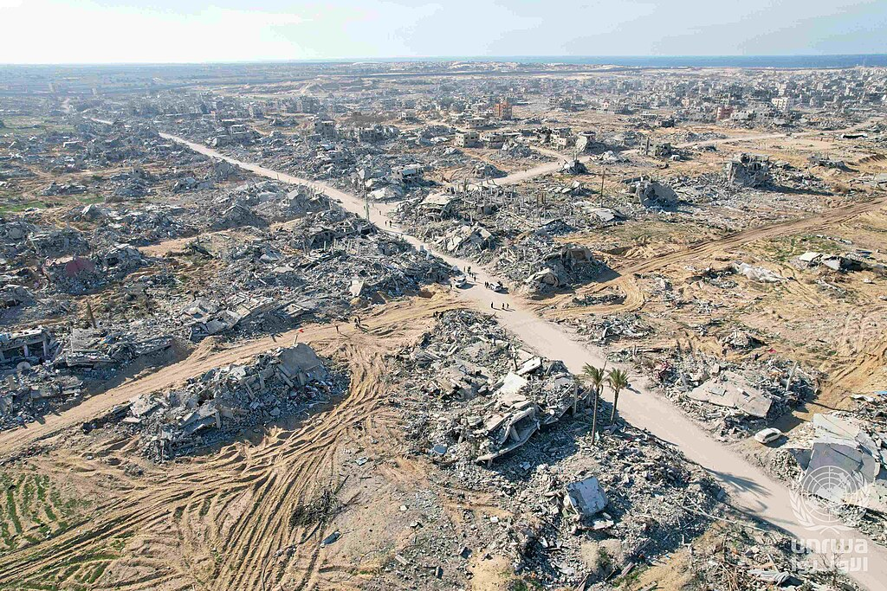

G‘azo shahrida reyd: hujumlarda kamida to‘rt falastinlik halok bo‘ldi
1-sentabr kuni Isroil kuchlari HAMASning ichki xavfsizlik xizmati rahbarini hibsga olish operatsiyasini o‘tkazdi. Chekinishni qoplash uchun berilgan zarbalarda ikki bola halok bo‘lgani xabar qilindi.

2026-yil 1-sentabr kuni G‘azo shahrida Isroil kuchlari tomonidan o‘tkazilgan maxsus operatsiya davomida kamida to‘rt falastinlik halok bo‘ldi; halok bo‘lganlar orasida ikki bola bor. Bu ma’lumot G‘azodagi rasmiylarga tayanib xabar qilindi.
Xabarlarga ko‘ra, operatsiya HAMAS a’zosini hibsga olishga qaratilgan edi va uning borishi aniqlanib qolgach, kuchlarning chekinishini qoplash uchun havo zarbalari berilgan.
Tomonlarning bayonotlari
Isroil mudofaa vaziri Isroil Kats yuqori martabali HAMAS a’zosi hibsga olinganini bildirdi. Isroil xavfsizlik amaldorining aytishicha, hibsga olingan shaxs HAMASning ichki xavfsizlik xizmati rahbari bo‘lgan.
Falastin tomoni halok bo‘lganlar orasida tinch aholi borligini qayd etdi. Voqealarning mustaqil tekshiruvi cheklangan bo‘lib qolmoqda.
Sulh rejimi qanday ishlayapti
G‘azodagi uchinchi sulh 2025-yil 10-oktabrda AQSh qo‘llab-quvvatlagan tinchlik rejasining birinchi bosqichi kelishilgach kuchga kirgan edi. Reja doirasida 2026-yil 6-iyulda HAMASning G‘azodagi fuqarolik boshqaruvi iste’foga chiqdi, 31-iyulda esa qurolsizlanish bo‘yicha kelishuvga erishilgani e’lon qilindi — u qayta qurish jarayoni va Isroil kuchlarining chiqib ketishiga bog‘langan.
Shunga qaramay, sulh davrida ham harakatlar to‘xtamadi. Falastin tomoni hisobotlariga ko‘ra, 2025-yil 10-oktabrdan 2026-yil 14-aprelgacha bo‘lgan davrda ko‘plab o‘q otish, bombardimon va mulk buzish holatlari qayd etilgan.
Sentabr oyidagi boshqa voqealar
Oyning davomida yana bir nechta hodisa qayd etildi. 10-sentabr kuni G‘azoning shimolidagi Bayt Lahiya hududida berilgan zarbada kamida to‘rt kishi, jumladan ikki bola halok bo‘ldi. 13-sentabr kuni sulhga qaramay ikki falastinlik halok bo‘lgani xabar qilindi.
- 1-sentabr: G‘azo shahridagi reyd, kamida 4 halok
- 10-sentabr: Bayt Lahiyadagi zarba, kamida 4 halok
- 13-sentabr: ikki falastinlik halok
- Sulh kuchga kirgan sana: 2025-yil 10-oktabr
Qayta qurish holati
G‘azo rasmiylari ma’lumotiga ko‘ra, 2023-yil oktabridan beri sektorning 90 foizdan ortig‘i vayron bo‘lgan. 8-sentabr kuni e’lon qilingan materiallarda aholi uy va do‘konlarni loy g‘ishtlar, qutqarilgan yog‘och hamda mato va plastik parchalaridan qayta tiklayotgani ko‘rsatilgan.
Qayta qurishning umumiy qiymati bo‘yicha 2026-yil iyulida e’lon qilingan hisobotda o‘n yillik muddat uchun 71 milliard dollar raqami keltirilgan. Yevropa Komissiyasi esa Bryusseldagi donorlar uchrashuvida “Team Gaza Initiative” doirasida 1 milliard dollarlik jamg‘arma e’lon qilgan edi.
Musulmon dunyosidagi aks-sado
G‘azodagi vaziyat 2026-yil davomida mintaqaviy diplomatiyaning markaziy mavzularidan biri bo‘lib qoldi. Markaziy Osiyo davlatlari rasmiy darajada gumanitar yordam va siyosiy yechim tarafdori ekanini bildirgan; O‘zbekiston, Qozog‘iston va Qirg‘iziston turli bosqichlarda gumanitar yuk jo‘natgan.
AQShdagi musulmon jamoalari uchun ham bu mavzu ichki siyosiy muhokamaning bir qismiga aylandi — jumladan universitet kampuslaridagi namoyishlar va ular bilan bog‘liq sud jarayonlari orqali.
Ma’lumot manbalari haqida
Sulh rejasi bosqichlari
2025-yil 10-oktabrda kuchga kirgan sulh AQSh qo‘llab-quvvatlagan tinchlik rejasining birinchi bosqichi doirasida kelishilgan edi. Reja bir necha bosqichdan iborat bo‘lib, har biri oldingisining bajarilishiga bog‘langan.
2026-yil 6-iyulda HAMASning G‘azodagi fuqarolik boshqaruvi iste’foga chiqdi. 31-iyulda esa qurolsizlanish bo‘yicha kelishuvga erishilgani e’lon qilindi; u qayta qurish jarayoni va Isroil kuchlarining chiqib ketishiga bog‘langan.
Amalda bosqichlar o‘rtasidagi o‘tish sekin kechmoqda va tomonlar bir-birini kelishuv shartlarini buzishda ayblab kelmoqda.
“Sariq chiziq” rejimi
Sulh shartlariga ko‘ra, Isroil kuchlari G‘azo hududining bir qismidan chekindi va nazorat chegarasi belgilandi. Xabarlarda bu chegara “sariq chiziq” deb ataladi.
Falastin tomoni hisobotlariga ko‘ra, 2025-yil 10-oktabrdan 2026-yil 14-aprelgacha bo‘lgan davrda chiziqdan tashqaridagi hududlarga kirish holatlari, o‘q otish va bombardimonlar qayd etilgan. Isroil tomoni bu harakatlarni xavfsizlik choralari sifatida izohlaydi.
Gumanitar holat
G‘azo rasmiylari ma’lumotiga ko‘ra, 2023-yil oktabridan beri sektorning 90 foizdan ortig‘i vayron bo‘lgan. Aholining katta qismi vaqtinchalik boshpanalarda yoki chodirlarda yashaydi.
8-sentabr kuni e’lon qilingan materiallarda aholi uy va do‘konlarni loy g‘ishtlar, qutqarilgan yog‘och hamda mato va plastik parchalaridan qayta tiklayotgani ko‘rsatilgan. Bunday inshootlar issiq, yomg‘ir va sovuqdan yetarli himoya bermaydi.
Yordam yetkazib berish hajmi bo‘yicha tomonlarning ma’lumotlari farq qiladi: xalqaro tashkilotlar kelishuvda belgilangan yuk mashinalari soniga to‘liq erishilmayotganini qayd etadi.
Qayta qurish narxi
2026-yil iyulida e’lon qilingan hisobotda G‘azoni qayta qurish o‘n yillik muddat uchun 71 milliard dollarga baholandi. Hisobotda jarayonga falastinliklarning o‘zlari jalb qilinishi zarurligi qayd etilgan.
Yevropa Komissiyasi Bryusseldagi donorlar uchrashuvida “Team Gaza Initiative” doirasida 1 milliard dollarlik jamg‘arma e’lon qildi. Bu summa umumiy ehtiyojning kichik qismini qoplaydi.
Sentabr oyidagi voqealar
- 1-sentabr: G‘azo shahridagi reyd, kamida 4 kishi halok
- 8-sentabr: qayta qurish bo‘yicha materiallar, sektorning 90%+ vayronaligi qayd etildi
- 10-sentabr: Bayt Lahiyadagi zarba, kamida 4 kishi halok
- 13-sentabr: sulhga qaramay ikki falastinlik halok
Bu ro‘yxat to‘liq emas va u ochiq manbalarda keng yoritilgan voqealarni qamrab oladi.
Xalqaro reaksiya
Musulmon davlatlari va xalqaro tashkilotlar sulh shartlariga rioya qilish va gumanitar yordam hajmini oshirishga chaqirmoqda. Markaziy Osiyo davlatlari rasmiy darajada gumanitar yordam va siyosiy yechim tarafdori ekanini bildirgan.
AQShda esa bu mavzu ichki siyosiy muhokamaning bir qismiga aylandi. 14-sentabr kuni falastinlik faol Mahmud Xalil Kolumbiya universitetiga qarshi fuqarolik huquqlari bo‘yicha da’vo qo‘zg‘adi.
Ma’lumotlarni baholash
G‘azodagi talafotlar bo‘yicha raqamlar mahalliy sog‘liqni saqlash idoralari ma’lumotlariga tayanadi; Isroil tomoni ayrim hollarda ularga e’tiroz bildiradi. Mustaqil xalqaro tekshiruv imkoniyatlari cheklangan bo‘lib qolmoqda.
Shu sababli turli manbalarda keltirilgan raqamlar farq qilishi mumkin va ular ehtiyotkorlik bilan taqqoslanishi kerak.
Ichki xavfsizlik xizmati
Isroil xavfsizlik amaldorining aytishicha, hibsga olingan shaxs HAMASning ichki xavfsizlik xizmati rahbari bo‘lgan. Bu tuzilma sektordagi tartib va nazorat masalalari bilan shug‘ullangan.
Fuqarolik boshqaruvining iste’fosidan keyin sektorda ma’muriy vakuum masalasi muhokama qilinmoqda: kimning qo‘lida qaysi vakolat qolgani aniq emas.
Bolalar va tinch aholi
Xalqaro gumanitar huquq qoidalariga ko‘ra, harbiy operatsiyalarda tinch aholini himoya qilish talab etiladi. BMT va inson huquqlari tashkilotlari mojaro davomida bu qoidalarning buzilishi holatlarini muntazam qayd etib kelmoqda.
1-sentabrdagi voqeada halok bo‘lganlar orasida ikki bola borligi xabar qilindi. 10-sentabrdagi Bayt Lahiya zarbasida ham bolalar halok bo‘lgani qayd etildi.
G‘azodagi talafotlar bo‘yicha raqamlar mahalliy sog‘liqni saqlash idoralari ma’lumotlariga tayanadi va Isroil tomoni ayrim hollarda ularga e’tiroz bildiradi. Mustaqil xalqaro tekshiruv imkoniyatlari cheklangan.